The Iris GUI is an adaptation of the Specview (STScI) spectral visualization and analysis GUI, and as a result is equipped with several of the data display preferences and editing capabilities offered by that application. This thread presents the various options available for interacting with and customizing the SED data display in the Iris Visualizer.
Note: As most Specview features remain unchanged between the standard and the Sherpa-enabled Iris version, the documentation provided in the Specview help documentation serves as an exhaustive reference for most of the data visualization features in Iris.
Last Update: 07 May 2015 - Updated for Iris 2.1 beta.
When SED data is read into Iris, it displays in the Iris Visualizer, where you can interact with the data plot in various ways. You can open the Iris Visualizer from the desktop icon “SED Viewer.” The terms Iris Visualizer and SED Viewer are used interchangeably throughout the documentation. The options available for customizing the data display are described in this thread.
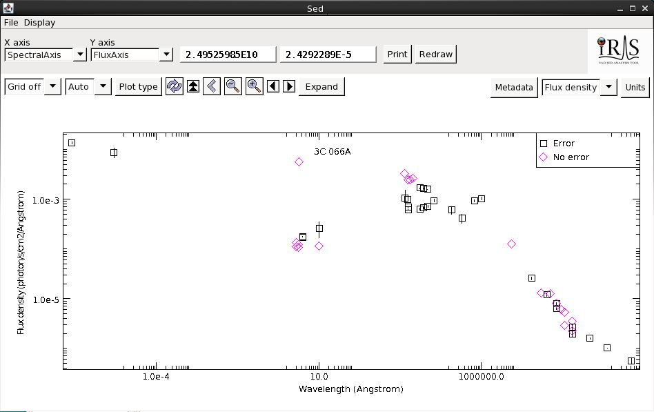
When multiple segments and/or photometric points have been read into the Iris session and co-plotted in the main display, it is important to note that the spectral data are not combined, co-added, or spliced in memory in any way; the raw data from the multiple input spectrograms/points is completely preserved in the resulting combination. This means that two separate SED data segments loaded into Iris for a particular source - e.g., observed with two different observatories and spanning separate (or overlapping) spectral ranges - may be offset from one another, as Iris does not automatically scale, trim, and join the separate segments to form a seamless SED for the source. This is illustrated in the image below.
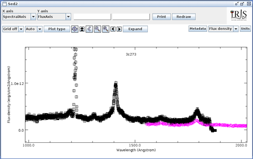
The set of widgets in the upper-left corner of the data display are available for adjusting the view and orientation of the SED segment(s) within the main display.
| The “Redraw” button is available within the Iris main display for refreshing the data plot, e.g., to clear any visual garbling or crosshair cursor leftovers that arise under certain combinations of computer platform and CPU speed. |
| 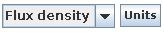 | The preferred units for the data display, e.g., “ergs/cm2/s/angstrom” versus “angstrom”, may be set using either the “Units” or “Flux density” buttons in the upper-right corner of the main display. |
The “Flux density” selection box allows you to choose the type of spectral quantity to be displayed on the Y axis, either “Flux density” or “Flux”, and also enables the selection of units for the spectral axis quantity. Once a selection is made, a dialog box populated with all available physical units appropriate for that quantity, will pop up (this pop-up box matches the “Units” selections). Selecting the desired units and clicking on the “Apply” button adjusts the data display to the desired preference.
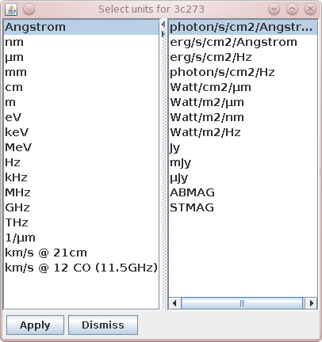
| The scale of the data plot axes in the Iris main display can be changed using the “Plot Type” button, or by clicking the cursor near any one of the four corners of the display; this will open a small window in which the X and Y axes scale may be set to linear or logarithmic (regular or extended). |
| 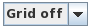 | Selecting the “Grid” option in the main display overlays a coordinate grid onto the main plot. |
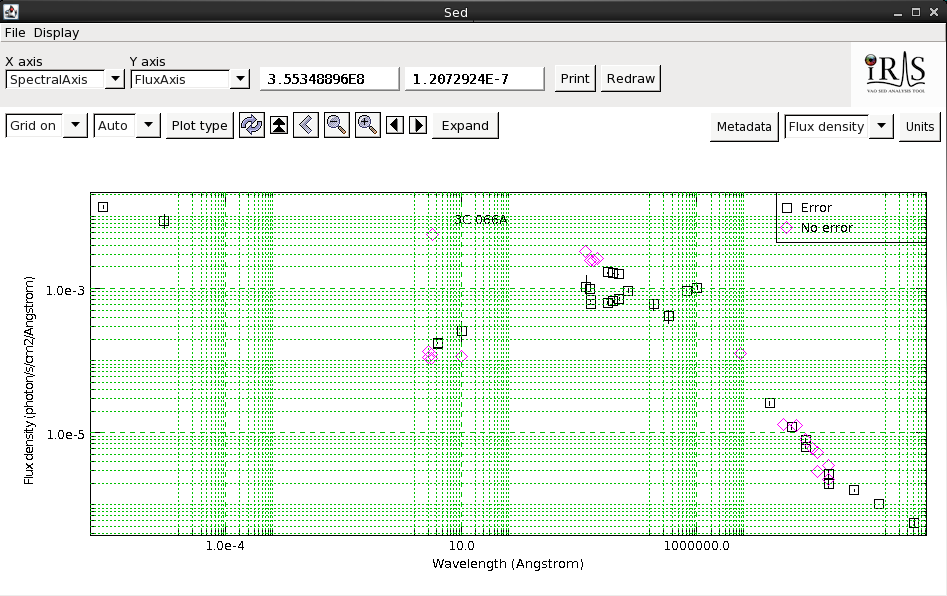
| [Back to top] |
By default, the SED Viewer window displays either “Sed” or “Iris Visualizer” for any file loaded into Iris. This name can be changed in the SED Builder window. Type the desired name in the bar next to “ID:” under “Selected SED” then click “Change.” From now on, the SED Viewer window will display the new name on the top bar and on the graph itself. You can also change the name of the SED on the graph by clicking on it; a box pops-up in the upper-left corner of the Iris desktop, into which you can type the desired name. Note that this title will revert back to the name of the SED listed in the Builder window.
You can also add labels and move them wherever you want on the plot. Double-clicking on empty space in the plot window will open up a box in the upper-left corner of the Iris Desktop, into which you can type the desired label name. By default, the label will be laid-out horizontally. Clicking the “Flip” putton will rotate the text 90 degrees. You can move the label by clicking and dragging it to another position. Clicking once on the label will re-open the box in the upper-left corner of the Desktop and allow you to edit it. To delete, click on the label and select “Erase” in the dialogue box.
| [Back to top] |
Clicking the “Metadata” button in the upper-right corner of the Iris display opens a window with tabs containing different levels of data and metadata in the SED.
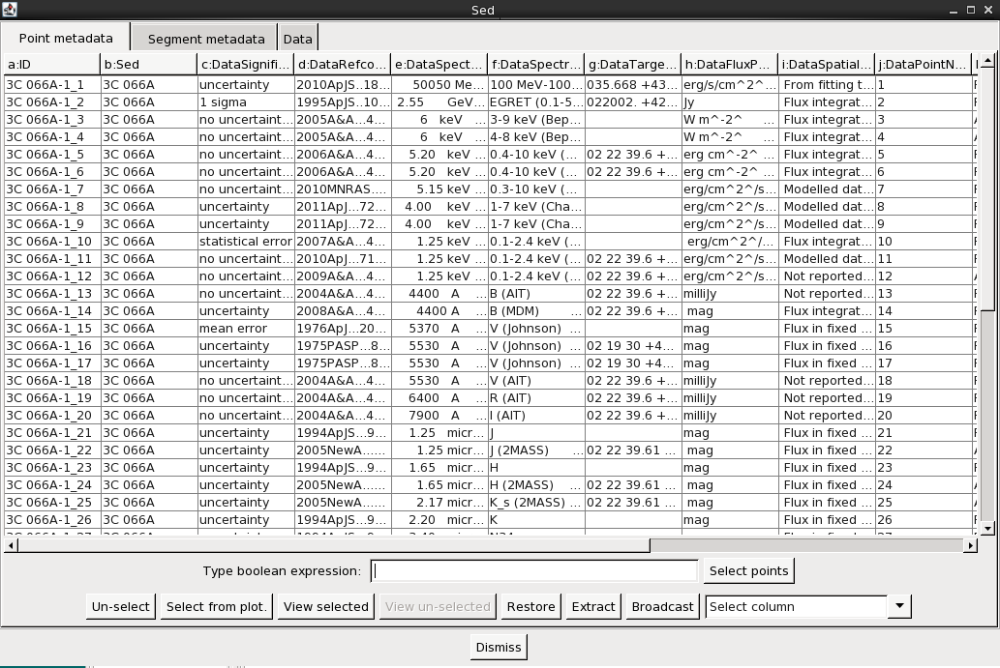
When available, the Metadata tab includes many useful pieces of information about the data points currently displayed. When a SED is imported from NED, as in the example considered in this thread, the metadata includes such things as the bibliographic reference code for each data point, the spectral range covered by instrument used to obtain data point, data point uncertainty and flux values as they are published, data point significance values, among other properties. The full list of metadata information available for each data point will depend on the specific data sources.
The metadata table may be sorted by clicking the header of the column by which you would like to sort - once for ascending order, twice for descending order, and three times to restore the default sorting - and rearranged by clicking and dragging columns left or right. A nested sort may be achieved by first selecting the column that will set the master sort, clicking and holding the Control key, and then selecting the column by which to sort the groups of the master sort.
| [Back to top] |
Metadata that is common to all data points in a SED segment is displayed under this tab, in a similar table as the one that appears under the Point Metadata tab.
| [Back to top] |
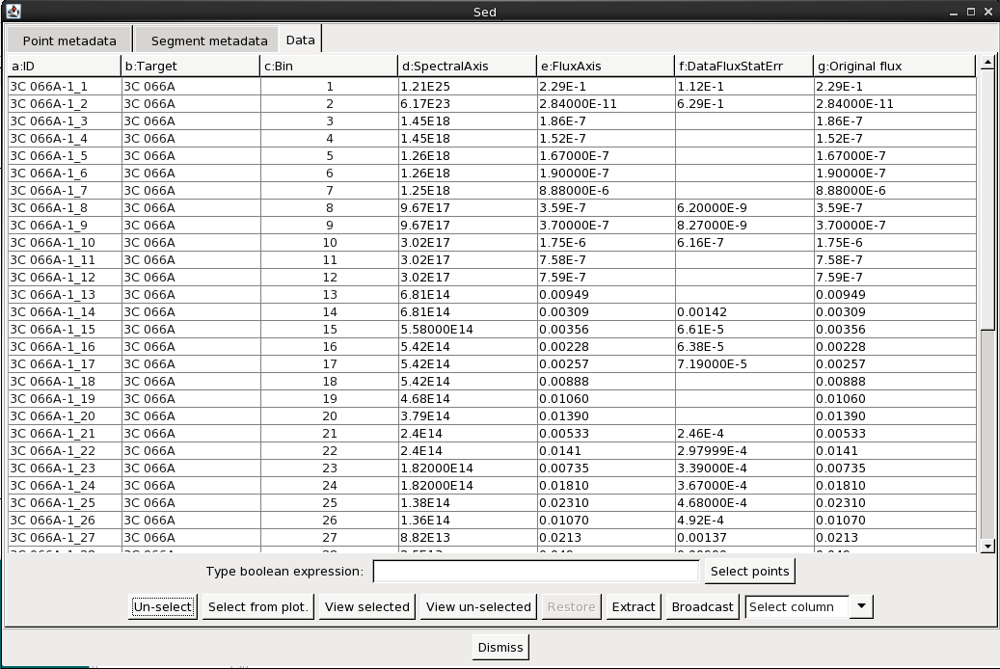
The X and Y coordinate values of each SED data point in the Iris display are contained in the “Spectral Axis” and “Flux Axis” columns of the Data tab in the Metadata window, and reflect the values as they were imported into Iris from NED or uploaded from a file on your hard disk - i.e., not what is currently plotted in the Iris display (in the event that you changed the units of the data plot within the display). For example, if the data were uploaded in Jansky flux units versus frequency in Hertz, but then you change the display units to ergs/s/cm2/Angstrom versus Angstrom, the data point values returned will be in Jansky flux units and Hertz.
| [Back to top] |
Data points can be masked, or ‘grayed out’ from the Iris plot display with a number of tools. The most basic works by simply selecting the rows corresponding to these points in any one of the Point Metadata, Segment Metadata, or Data tabs of the Metadata window, and then click “View un-selected” at the bottom of that window; you can select the points by clicking the desired rows while holding the Ctrl/Command key down. In the display, the points selected in the Metadata window will appear fainter than the unselected points.
The “View selected” button performs the reverse operation, and the “Restore” button restores the plot display to its original state. The “Un-select” button removes the selection state from all rows in the table, without affecting the plot display.
The Point Metadata table can be hierarchically sorted by clicking on specific column headers. Clicking once sorts the rows in ascending order of that column; next click sorts it in descending order, and the next click places the rows back on their original ordering. By holding the Ctrl key pressed when clicking on a column header, the sorting state of previously sorted columns is kept unchanged, thus enabling hierarchical sorting.
Using that mechanism, rows can be re-ordered together according to relatively complex selection criteria against column content. This facilitates the lumping together of the desired rows, that can in turn be selected and operated upon with the tools described in the preceding paragraph. For example, we can click on the “DataSignificance” tab (column c) and easily mask data points without uncertainties by holding down the Shift key and clicking the top and bottom of the “no uncertainty reported” block in the table (see figure below).
Note that these data masking operations relate to the display only. Internally, masked data is kept intact and will be used in data analysis and modeling performed by Iris. To really get rid of unwanted data, please refer to section ‘Extracting a Filtered SED’ below.
Note that columns can be re-positioned at will by dragging their headers horizontally.
Also note that string-valued columns are treated in lexical order. Integer and floating-point-valued columns are treated in numerical order.
| [Back to top] |
Data point selection can also be performed based on the plot itself, instead of the table. One way to do that is by clicking on a specific data point on the display. The corresponding row in both the Point Metadata and Data tables will be selected. This selection is non-destructive, meaning that by successively clicking on points on the display, one can add the rows corresponding to each one, to the set of selected rows.
Another way is by zooming over the region that contains the points one wants to select, and then clicking the “Select from plot” button on the Metadata window. The table rows corresponding to the data points that show up inside the plot viewport will be added to the selected set of rows already on the table.
| [Back to top] |
In order to enable even more complex selection criteria though, table rows can be selected based on the result of an arbitrary Boolean expression computed on selected column contents. This expression is entered in the ‘Type boolean expression:’ text field, and by hitting Return, or clicking on the ‘Select points’ button, the expression is computed for every row in the table, and the row is selected if the Boolean result is True. Data points selected by the Boolean filter on one table (metadata or data) are automatically propgated to the other table.
Iris uses a Python interpreter to parse and execute the expression, thus the syntax for this expression is plain Python. All Python built-in and string functions are supported. See the Python documentation here: http://docs.python.org/2/library/functions.html http://docs.python.org/2/library/string.html#string-function
In the expression, columns are referred by their name prefix. Notice that each column name starts with a lower-case letter followed by a colon (‘:’). This is the prefix one should use in the expression to refer to the column.
An example of a valid expression that can be applied to the NED-supplied SED for 3C 066A could be:
n: > 1.0 and c:.rstrip().endswith('reported')
In this SED, column n: contains the DataFluxPublishedValue metadata property, a floating-point value, and column c: contains the DataSignificance metadata property, a string. (See more examples of using the Boolean filter in Co-plotting Separate SEDs)
Of course, in this very simple example the same selection could be accomplished by just sorting the table by column c: first, and then holding the Ctrl key and sorting by column n:. The desired rows would be easy to spot as a single group or contiguous rows, and could be selected with a simple mouse gesture.
| [Back to top] |
The “Extract” function in the Metadata window allows you to go one step further than simply masking unwanted data points; it allows you to extract a whole new SED consisting of only the selected data points.
Making the desired row selections in the Metadata window and then clicking “Extract” will open a new SED in the SED Builder window named “FilterSED” - an ID which you can change - which will display in the SED Viewer.
| [Back to top] |
One can simultaneously plot two or more separate SEDs using the Co-plot function in the SED Viewer. In this example, we will co-plot two out of the three separate SEDs imported from NED: M82, M87 and NGC7714. Click the “Display” button on the Viewer toolbar (upper-left corner) and select “Co-plot.” A menu with the list of all SEDs available for co-plotting will pop up.
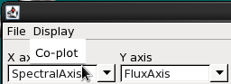
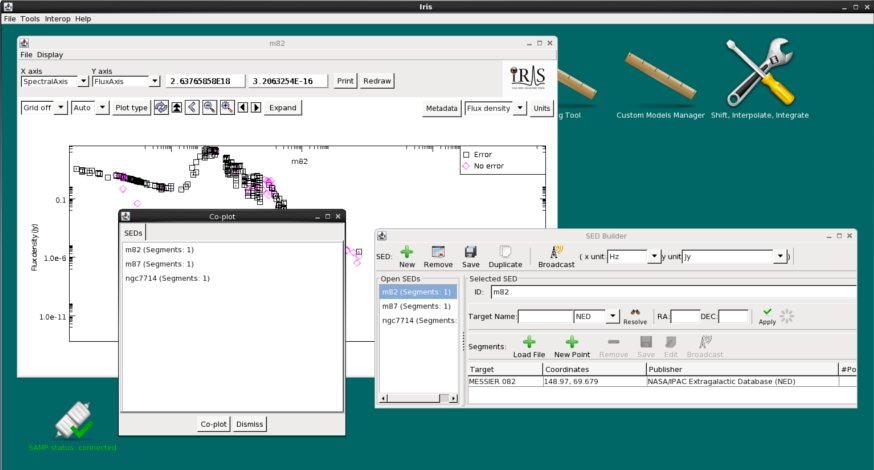
To co-plot, hold-down the Control key (Command key on Mac systems) and click on the SED names you wish to view, and then click the “Co-plot” button on the menu (to select all SEDs, simply click on the first SED, hold-down the Shift key, click on the last SED, and hit “Co-plot”). Here, we’ve selected M82 and NGC7714. The Viewer window updates with all SEDs selected for co-plotting. Each SED is plotted with a different color, and the color-coding and the names of the SEDs co-plotted are shown in the legend (which can be deleted with a mouse click). Note that the axis units may change after co-plotting; use the “Units” button in the upper-right corner of the SED Viewer if you wish to change the axes units in Co-plot mode.
In co-plot mode, we can still access the metadata of each photometric point by right-clicking on it, and the Metadata Browser (that can be accessed by clicking on the “Metadata” button in the SED Viewer window) can be used to explore the distribution of data and metadata for all photometric points. In this case, the metadata and data of both SEDs are listed in the same window since we are visualizing two different SEDs. Data belonging to different sources can be selected easily using a boolean filter based on one of the metadata, which is added to the original metadata of each photometric point when the Metadata Browser is opened in co-plot mode. The second column of the metadata in the “Point metadata” tab of the metadata browser, named “b:SED”, contains the name of the SED for each point, and can be used to extract subsets of points belonging to one SED using a simple boolean filter.
For example, if our SEDs are named “m82” and “ngc7714”, the photometric points belonging to m82 can be selected by entering the boolean filter: “b: == ‘m82’” in the “Type boolean expression” field of the Metadata tab of the Metadata Browser, and clicking on “Select points”. The selected points (belonging to the m82 SED) will be highlighted in the window.
We can also create new SEDs with information from the co-plotted SEDs using the Metadata Browser. Let’s say we’re interested in points with published uncertainties and with flux values larger than 1.0 Jy (this will be easy as these are the units we imported M82 and NGC7714 with). Click on the “Data” tab and type ’e: > 1.0 and f: !="“ ’ in the Boolean filter, where e: is the FluxAxis column, in Jy, and f: is StatError. We display the selected points by clicking ”View Selected." The masked data is faded in the SED Viewer.
We can view the selected points-only by clicking “Extract” on the Metadata Browser; a new SED, called “FilterSed,” is displayed in the Viewer, and is available for saving, appending and analyzing in the SED Builder window. The final SED is displayed in the figure below.
| [Back to top] |
The drop selector at the right bottom of the Point Metadata and Data tabs allows one to pick a specific column and have Iris paint each data point on the display with a color that linearly maps into the data range of the chosen column. In the example below, we have selected the “DataSignificance” column for the NED SED of M82.
Floating-point columns are mapped continuously into color space. Integer and string valued columns are mapped in such a way that the number of different colors used in the plot is the same as the number of unique values in the column. String-valued columns are mapped lexically into color space.
The color space is defined here
| [Back to top] |
The SED data currently displayed in Iris may be printed to a hardcopy image in either JPG (.jpg), PNG (.png), GIF (.gif) or BITMAP (.bmp) format, by selecting File->Save plot to image file, and making the desired image format selection. The image will scale to the size and shape of the plot in the Iris Visualizer.
| [Back to top] |
By right-clicking (Ctrl-click on MacOS) on a specific data point on the Iris display plot, a window containing information for that point is brought to screen. The window contains tabs that display similar information as described above for the Point Metadata, Segment Metadata, and Data tabs for the entire SED, but relative to the selected point only.
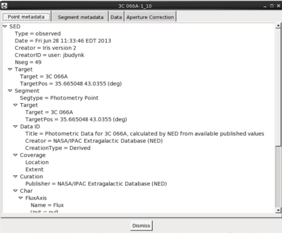
This window has an extra tab named ‘Aperture Correction’ that enables one to apply a simple multiplicative flux correction to the data point.
Entering either the desired flux – or the ratio of the desired flux to the original flux – and clicking the appropriate button will modify the data point flux. Iris keeps the original flux so successive applications of this tool will not cause the original flux value to be lost. In that way, we can always assign a precise meaning to the ratio value.
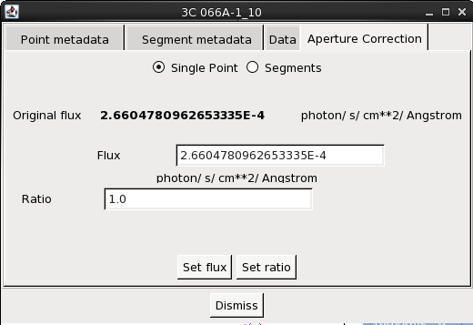
The correction can be applied as well to the entire segment to which the point belongs. Just select the segments ratio button and enter the desired flux ratio.
One can also apply a flux correction by directly dragging the desired point on the Iris display plot, holding the Shift key down while dragging. Note that this feature is always enabled, even when no Aperture Correction window is on screen.
| [Back to top] |
Iris is able to communicate with other SAMP-enabled applications, such as Topcat and Aladin. So long as the SAMP status in the lower left-hand corner of the Iris desktop says “connected”, we can transmit tabular data back-and-forth between Iris and other SAMP-enabled Virtual Observatory programs.
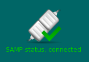
Data is transferred between different applications through the “Broadcast” button. Iris can broadcast data from the SED Builder, which allows us to send the metadata for SED segments and aggregate SEDs, and from the Metadata Browser, from which we can select specific data points to send using the same methods outlined above in this thread (selecting by column, Boolean filter, selecting from plot, etc.). The button is located at the top of the SED Builder window, symbolized as a radio tower, and in the bottom right-hand corner of the Metadata Browser window.
Say we want to explore the 3C 066A data with published uncertainties in a program more suitable for tabular data manipulation, for example Topcat. We first mask data without uncertainties using the Boolean filter in the Metadata Browser. If Topcat is open (see TOPCAT documentation), you should be able to send the table containing all metadata of the selected subset of points to Topcat by simply clicking on the “Broadcast” button in the Single Point metadata browser tab (just make sure that Iris is registered to the SAMP hub by checking whether Iris icon appears in the lower-right margin of the main Topcat window). At this point, a table of the metadata of the selected points will appear in the Topcat file list window, where users will be able to produce scatterplots, histograms, and harness all of the powerful data manipulation and data discovery features available in Topcat.
| [Back to top] |
| Date | Changes |
|---|---|
| 08 Aug 2011 | updated for Iris Beta 2.5 |
| 26 Sep 2011 | updated for Iris 1.0 |
| 12 Jun 2012 | updated for Iris 1.1 |
| 27 Nov 2012 | updated for Iris 1.2 |
| 05 Aug 2013 | Updated for Iris 2.0. Added co-plot capability, interoperability with SAMP-enabled applications, and saving plot images discussions. Updated screenshots and fixed table of contents. |
| 02 Dec 2013 | Updated for Iris 2.0.1 |
| 07 May 2015 | Updated for Iris 2.1 beta. |
| [Back to top] |
{kind=link}
{kind=link}
{kind=link}
{kind=link}
{kind=link}
{kind=link}
{kind=link}
{kind=link}
{kind=link}
{kind=link}
{kind=link}
{kind=link}
{kind=link}
{kind=link}
{kind=link}
{kind=link}